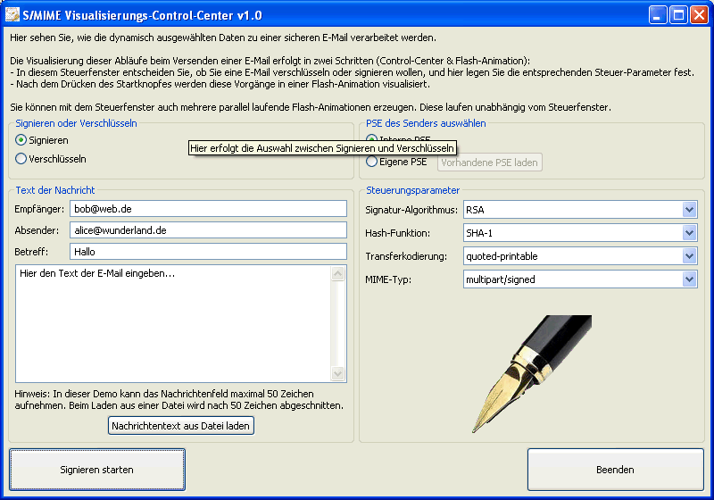
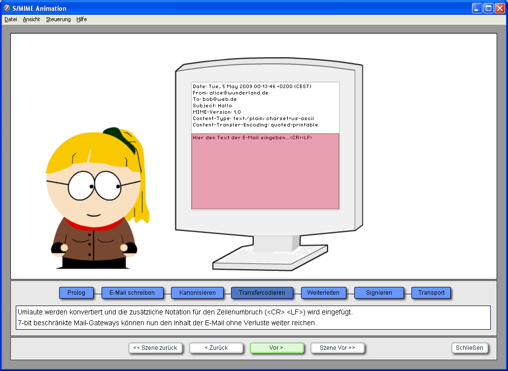
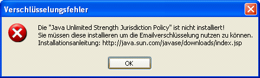

Die Visualisierung einer sicheren E-Mail zeigt, wie nach dem S/MIME-Standard eine Mail signiert und verschlüsselt wird.
Diese Visualisierung nutzt zwei Fenster:
Dabei werden die Konzepte PKI, Zertifikate, Hashverfahren, Verschlüsselung und Signierung erläutert: Diese Konzepte kommen bei E-Mails anhand des S/MIME-Protokoll zum Einsatz.
Die Visualisierung in verständlicher Form mit moderner Animationssoftware ist eine sinnvolle Maßnahme zur Awarenessbildung (Sensibilisierung der Menschen), da sichere E-Mail eine wichtige Komponente zur Erhaltung der Privatsphäre, zur Abwehr gegen Man-in-the-Middle-Angriffe und gegen Phishing ist.


Die Grundlage zum Text-basierten E-Mail-Verkehr wurde bereits im Jahre 1982 durch zwei Standards geschaffen:
Da E-Mails während des Transports durch verschiedene Netzwerke weitergereicht werden, die möglicherweise über verschiedene Protokolle kommunizieren, werden Gateways (Protokollumsetzer) als Zwischenknoten eingesetzt. Ein E-Mail-Gateway veranlasst, dass E-Mails zwischengespeichert und in Richtung Ziel weiterbefördert werden.
E-Mails enthalten mittlerweile oftmals über den reinen Text hinaus diverse Anhänge in Form von Binärdaten. Deshalb wurden die beiden obigen Standards durch den MIME-Standard (Multipurpose Internet Mail Extensions) erweitert, der in [RFC2045 bis 2049] beschrieben ist.
S/MIME (Secure Multipurpose Internet Mail Extensions) ist ein Protokoll, welches in einer nochmaligen Erweiterung die MIME-Datentypen um die Möglichkeit des Signierens und Verschlüsselns ergänzt. Dabei baut es auf den Formatvorgaben der Cryptographic Message Syntax (CMS) auf, die in den Public Key Cryptography Standards (PKCS #7) spezifiziert sind. S/MIME kann sowohl für verschlüsselte E-Mails als auch für verschlüsselte Kommunikation wie http verwendet werden. Die folgende Tabelle zeigt einige in S/MIME v3.1 verwendete Algorithmen:
| Algorithmus | S/MIME v3.1 vorgeschrieben, optional |
| Hashverfahren | SHA-1, MD5 |
| Signaturverfahren | DSA, RSA |
| Public-Key-Verschlüsselung | RSA, Diffie-Hellman (RFC2631) |
| Symmetrische Verfahren | 3DES, AES |
Literatur:
[1] Diplomarbeit von Michael Linden und Thorsten Krüger im Fachbereich Wirtschaftsinformatik der Universität Siegen, 2007: "Dynamische Visualisierung von E-Mailverschlüsselung mittels moderner Animationssoftware zur Awarenessbildung".
[2] Wikipedia, Artikel zu S/MIME: http://de.wikipedia.org/wiki/S/MIME
[3] RFC822 - STANDARD FOR THE FORMAT OF ARPA INTERNET TEXT MESSAGES: http://www.faqs.org/rfcs/rfc822.html
[4] RFC821 - Simple Mail Transfer Protocol: http://www.faqs.org/rfcs/rfc821.html
[5] RFC2631 - Diffie-Hellman Key Agreement Method: http://www.faqs.org/rfcs/rfc2631.html
Bemerkung 1:
Das Control-Center ist in Java mit SWT geschrieben und erfordert mindestens Java 1.5. Zur Umsetzung der kryptographischen Routinen wird die Bouncy Castle (BC) Cryptography Library eingesetzt. Dabei fungiert die BC Cryptography Library als zusätzlicher Security Provider für Java.
Um bei der Verschlüsselung Schlüssel beliebiger Länge verwenden zu können, müssen vor Einsatz der BC die "unrestricted policy files" installiert werden. Man erhält diese z.B. von http://java.sun.com oder genauer http://java.sun.com/javase/downloads/index.jsp. Zur Installation sind in C:\program files\Java\jre6\lib\security die beiden alten JAR-Dateien umzubenennen und die neuen einzuspielen: local_policy.jar, US_export_policy.jar.
Damit es funktioniert, muss man das Control-Center schließen und neu starten.
Ist die Java Cryptography Extension (JCE) "Unlimited Strength Jurisdiction Policy" nicht installiert, kommt folgende Meldung:

Bemerkung 2:
In der Flashanimation wird der Windows-Pixelfont Bavaria Extended zum Darstellen aller dynamischen Inhalte
verwendet. Wenn er nicht installiert ist, kann man den Text zwar lesen, aber die Hintergrund-Markierungen sind
nicht korrekt platziert. Die Schriftart ist für nicht-kommerzielle Zwecke frei verwendbar.
Quelle:
http://pixelfonts.style-force.net/download/bavaria-extended/
Das Installieren von Fonts unter Windows erfordert folgende Schritte: